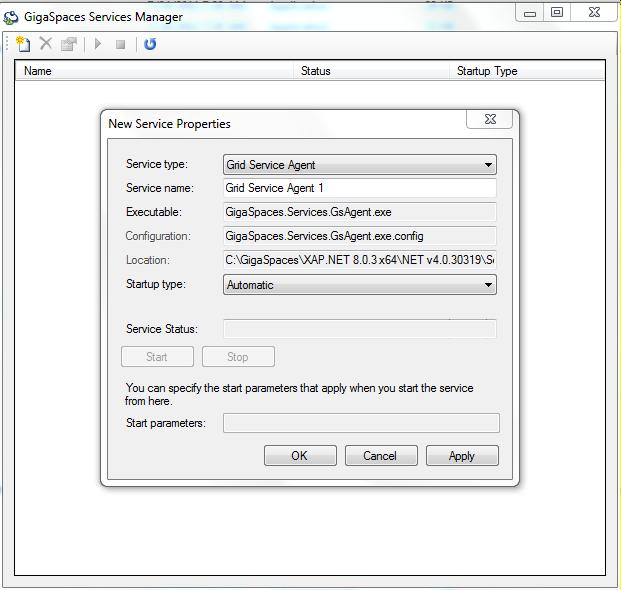

When installing the Service Grid on a Microsoft Windows environment, many administrators prefer to setup the Service Grid as A Windows Service, which have several advantages over standard console applications:
This page explains how to install a Service Grid as a Windows Service and manage it.
The Windows Services management console lets users start/stop installed services and modify their properties, but does not support installing new services. This task is can be done via a command line, or during installation of an application.
Instead, GigaSpaces bin folder) which simplifies common administration tasks:
Grid Service Agent as you please.
Some operations require elevated permissions - make sure you run with appropriate permissions. If you're using Windows Vista or later and UAC is turned on, it is recommended to use "Run As Administrator' (for more info see: http://support.microsoft.com/kb/922708).
To view a service properties, right-click it and select Properties, or simply double-click it. A dialog window with the service properties will appear.
The Service Properties window shows the name of the service configuration file. Either Click the configuration label to open the configuration file using your default XML viewer, or click the location label to open the service folder, then edit the configuration file using your favorite XML editor.
In order for configuration changes to take effect, the service needs to be stopped and restarted.